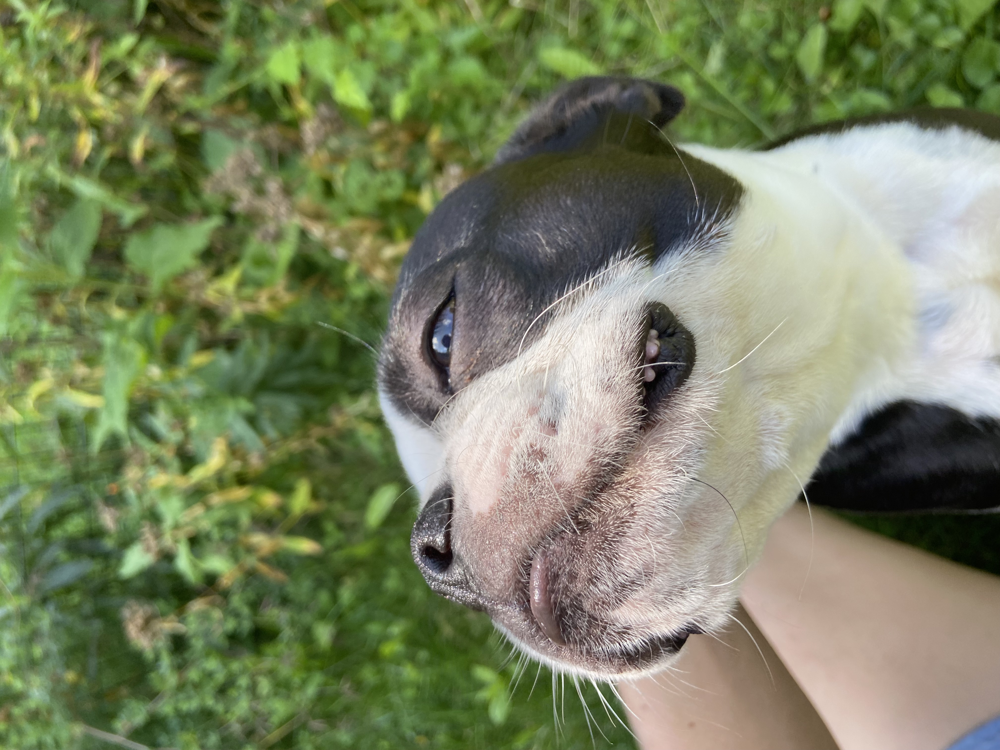

Pets
Moira
Moira is an energetic dog that greets everyone as soon as they come home! She enjoys playing with her feline sister and running around in the backyard.
Likes:
- Bike rides
- Dutch ovening any member of the family
- Playing with her feline sister
Photo Gallery:


Bonni

Bonni is a sweet Bernese Mountain dog I sometimes pet-sit for. She was raised by an older dog and in a large family with lots of children. She is good with crowds and loves any and all attention.
Likes:
- Long walks without her puppy sister, Abbi
- Sleeping
- Begging for food
Photo Gallery:

Lucy

Lucy is a vocal kitten I also pet-sit for. She loves tuna.
Likes:
- Tuna treats
- Watching the fish in the aquarium
- Begging for food
Photo Gallery:


Emmett

Emmett is Lucy's brother. He likes to cuddle at night.
Likes:
- Stealing Lucy's food
- Catnip
- Cuddling in bed
Photo Gallery: